Conheça um pouco mais sobre a localização dos seus amigos virtuais
Cada pessoa é um artista livre, chamado a transformar as condições, pensamentos e estruturas que moldam nossas vidas.
A cidade de Practicum reuniu profissionais de diversos cantos do mundo. Hoje, a Galeria de Arte Practicum tem o orgulho de apresentar histórias e fotos de algumas das pessoas que dedicam seu tempo e esforço para fazer com que os futuros profissionais de tecnologia desta cidade se sintam em casa. Cada um de nós tem uma história única sobre o lugar de onde viemos. Sinta-se à vontade para adicionar sua própria história e uma obra de arte visual dedicada à sua cidade natal à nossa coleção. Não importa de onde você é, estamos felizes por você ser nosso vizinho.

 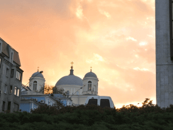
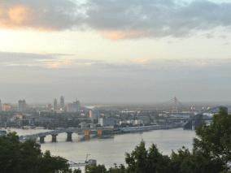
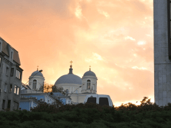
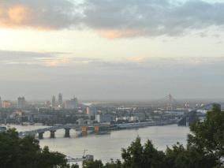
 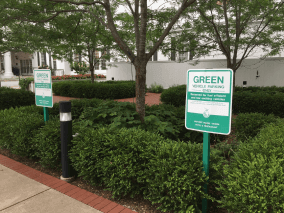
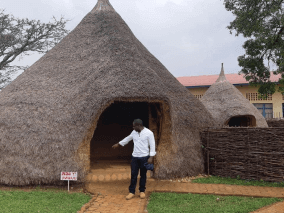
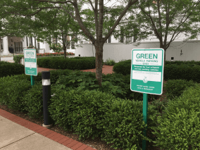
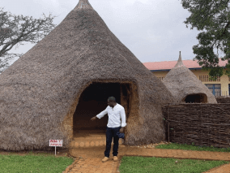
![Foto colorida, com uma montanha de floresta coníferas afrente de um conjunto de casas. A montanha é predominantemente verde-escuro, com a copa das árvores apresentando um tom mais claro, a parte central dessa montanha apresenta vegetação menor, como que se recuperando de desmatamento. Ao fundo, no canto esquerdo da foto, outras montanhas distantes, com cor num tom azul-escuro. Entre a montanha afrente e as distantes, há um vale com uma parte desmatada. O céu parece nebuloso com cor cinza, mas é um dia claro.](./imagesd/montanha.png)
-
Kiev, Ucrânia
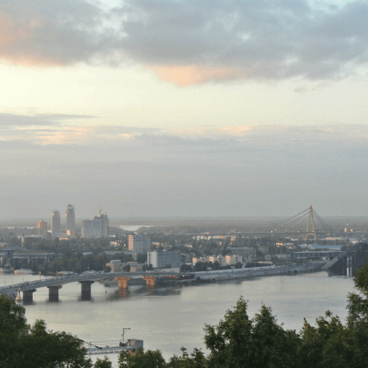Artista
Natalia Dolgushina, produtora de conteúdo
Compre esta obra de arte como NFTKyev (ou Kiev), capital da Ucrânia, é uma grande cidade localizada às margens do rio Dnipro. É claro que ninguém em sã consciência nadaria no rio, a menos que tenha crescido lá, e nesse caso provavelmente já tentou em algum momento. Os verões são quentes aqui e os invernos são frios, mas o outono e a primavera são absolutamente incríveis.
A uma curta caminhada da estrada do castelo, você pode desfrutar do melhor sorvete do mundo no Cadwalader's, cujo ingrediente secreto, segundo rumores, são algas marinhas de origem local. Outra reivindicação à fama é o fato de que Criccieth ganhou o prêmio *Wales in Bloom* por cinco anos consecutivos por suas espetaculares exibições florais pela cidade. Foi também a casa de David Lloyd George, o único galês a ocupar o cargo de primeiro-ministro do Reino Unido.
-
Criccieth, País de Gales

Artistas
Steffan Warren, editor-chefe Kseniya Glagoleva, gerente de projeto
Compre esta obra de arte como NFTA ruína medieval do Castelo de Cricieth tem vista para a cidade abaixo de uma rocha que se projeta para o mar. Acredita-se que tenha sido construído por Llewelyn, o Grande, no século XIII. Cerca de 900 anos depois, a auto-intitulada *Pérola de Gales nas margens de Snowdonia* tornou-se um destino turístico popular durante os meses de verão.
A uma curta caminhada da estrada do castelo, você pode desfrutar do melhor sorvete do mundo no Cadwalader's, cujo ingrediente secreto, segundo rumores, são algas marinhas de origem local. Outra reivindicação à fama é o fato de que Criccieth ganhou o prêmio *Wales in Bloom* por cinco anos consecutivos por suas espetaculares exibições florais pela cidade. Foi também a casa de David Lloyd George, o único galês a ocupar o cargo de primeiro-ministro do Reino Unido.
-
Berea, EUA
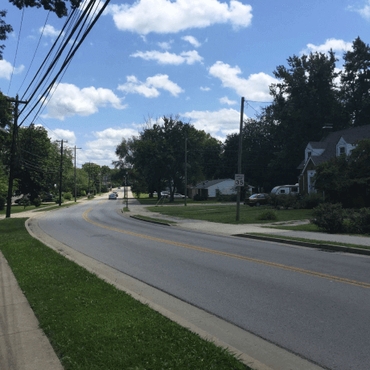Artista
Travis Turner, autor e editor
Compre esta obra de arte como NFTBerea é uma pequena cidade localizada na parte central do Kentucky. A cidade é cercada por belas florestas e campos. É conhecida como a capital do artesanato do estado, e os visitantes encontrarão muitas oportunidades de compras: lojas com bijuterias artesanais, velas, artigos de madeira, galerias, ateliês de vidro e muito mais. A cidade realiza um festival anual que celebra o pão de colher , um prato local feito com pão de milho e servido com uma colher de pau.
No entanto, provavelmente é mais conhecido pela faculdade local. O Berea College foi fundado em 1855 e foi o primeiro colégio no sul a ser racialmente integrado, bem como o primeiro a ser misto. De forma um tanto singular, não cobra mensalidades - todo aluno recebe uma bolsa de estudos integral.
-
Muramvya, Burund
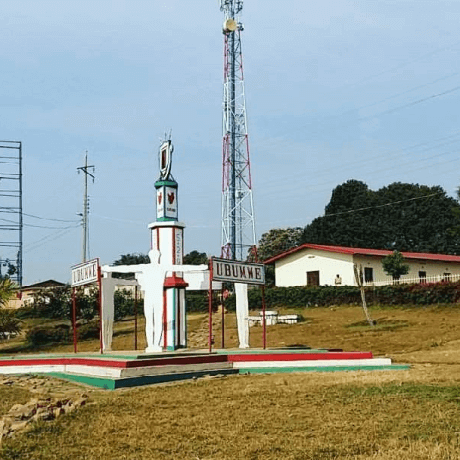Artista
Grevisse Kenguruka, editor técnico
Compre esta obra de arte como NFTMuramvya é uma das 18 províncias de Burundi. Na era do reino, Muramvya era a capital real e em 2007, por causa de sua paisagem cultural e natural, foi adicionada à Lista Provisória do Patrimônio Mundial da UNESCO. Está localizada no centro de Burundi, entre as capitais políticas e econômicas do país.
O clima é bastante frio à noite, mas durante o dia, você pensaria que está no céu. A 2.665 metros (8.743 pés) acima do nível do mar, o Monte Teza é um dos lugares mais frios da província. Mas essa brisa fresca permite uma das maiores plantações de chá e café do país, que representam a maior parte das exportações do Burundi.
O Parque Nacional de Kibira, uma das maiores reservas de vida selvagem para macacos, se sobrepõe a quatro províncias, incluindo Muramvya. Este Parque Nacional encontra-se no ápice das belas montanhas do Congo-Nile Divide, variando entre 1.550 e 2.660 metros de altitude. Está repleta de uma bela vegetação e fonte para os vários rios e riachos que fornecem água em todo o país.
-
Brasília, Brasil

Artista
Mara Lucia Menezes Thome, autora e editora
Compre esta obra de arte como NFTBrasília foi inaugurada em 21 de abril de 1960, pelo presidente Juscelino Kubitschek, está situada em Goias, na região Centro-oeste do Brasil. A construção da nova capital foi promessa de campanha desse presidente, e realizada em tempo recorde para os padrões daquela época.
A cidade foi planejada com o formato de um avião. Nas asas desse avião, asa norte e asa sul, estão as áreas residenciais e comerciais, e no centro está o eixo monumental, no qual se encontram a esplanada dos ministérios, culminando no final com a praça dos três poderes, com o Palácio do Planalto de um lado, Supremo Tribunal Federal do outro e Câmara e Senado no centro.